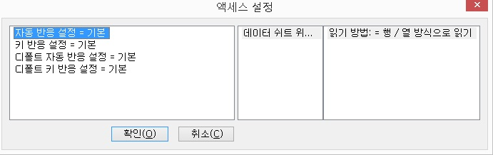

프로 버전에서 지원하는 Access는 오피스 2003을 중심으로 만들어 졌으며, 현재는 .MDB 파일을 지원합니다.
추후 프로잭트 파일에 대한 지원이 보강될 것이며, 아래는 Access의 간략한 기능과 센스리더 지원 기능을 중심으로 설명했습니다.

새로운 테이블을 만드는 방법은 디자인 보기에서 새 테이블 만들기, 마법사를 사용하여 테이블 만들기, 데이터를 입력하여 테이블 만들기 등의 방법이 있습니다. 그리고 만들어진 테이블은 내용을 확인하거나 수정 등의 작업을 할 수 있습니다.
1) 디자인 보기에서 새 테이블 만들기
'테이블 만들기' 대화상자는 필드 이름, 데이터형식, 설명의 세부분으로 이루어져 있으며, 필드 이름과 데이터형식은 꼭 입력 해야 합니다.
데이터 형식은 기본이 텍스트입니다. <Alt-아래 화살표> 키를 사용하여 목록을 활성화한 다음 <위/아래 화살표> 키를 이용하여 데이터 형식을 선택할 수 있습니다. 데이터 형식의 속성을 지정하려면 <F6> 키를 눌러 속성창과 테이블 디자인창을 전환한 다음 각 항목에 적당한 값을 입력합니다.
2) 마법사를 사용하여 테이블 만들기
마법사를 이용하는 방법은 예제 테이블에서 적당한 테이블을 선택한 다음 해당 테이블에 속한 필드들 중에서 원하는 필드를 선택하고 새 테이블로 옮기는 방법으로 새로운 테이블을 만들게 됩니다. 이 과정 중에서 프로 버전이 아직 지원하지 못하는 버튼이 2개 혹은 4개가 나오는데 첫 번째 버튼은 새 테이블로 옮기기, 두 번째 버튼은 전체 필드 옮기기 버튼입니다.
예제 테이블에서 선택한 필드를 새 테이블로 옮기려면 테이블 선택 이후 <새 테이블로 옮기기> 버튼을 눌러주면 되고, 전체 필드를 새 테이블로 옮기려면 <전체 필드 옮기기> 버튼을 눌러줍니다.또한 새 테이블에 필드가 옮겨진 경우 지우기와 모두 지우기 버튼이 활성화됩니다.
테이블과 필드를 모두 선택하였다면 <ALT-N> 키를 눌러 다음 단계로 진행합니다. 만약 <Alt-n> 키를 눌렀을 때 다음 단계로 진행하지 못하면 <Alt-F> 키를 눌러 다시 새로운 테이블을 만들도록 합니다.
3) 데이터를 입력하여 테이블 만들기
이 방법은 필드명을 선택할 수 없습니다. 기본적으로 10개의 필드만 제공되고, 각 필드에 값을 넣으면 바로 테이블 내용이 들어가게 됩니다.
4) 테이블 내용 보기
만들어진 테이블을 확인하려면 기본 목록에서 <Tab> 키를 눌러 테이블 버튼까지 이동한 다음 <Enter> 키를 누릅니다. 기본 목록에는 테이블, 쿼리, 폼, 보고서, 페이지, 매크로, 모듈 등의 버튼이 위치합니다. 원하는 테이블을 선택하면 해당 테이블 내용이 표시됩니다.
테이블을 확인하는 다른 방법으로는 테이블 목록 보기 기능키인 <Ctrl-1> 키를 누르는 방법이 있습니다. 현재 파일에서 작성된 테이블이 표시되면 원하는 테이블에서 <Enter> 키를 누릅니다.
** 테이블 관련 센스리더 지원 기능
(1)사용 가능한 자동반응 목록
[] 데이터 시트 읽기
테이블 보기나 쿼리 보기에서 시트간 이동이 있을 때 발생합니다.
(2)사용 가능한 기능들
[] 데이터 시트 제목 읽기
현재 선택된 필드의 제목을 읽어줍니다.
[] 데이터 시트 내용 읽기
현재 선택된 필드의 내용과 형태를 읽어줍니다.
[] 데이터 시트 위치 읽기
현재 데이터 시트를 행열 방식이나 A1 방식으로 읽어줍니다.
[] 현재 래코드 위치 <ALT-SHIFT-R>
현재 래코드의 위치와 총 래코드를 알려줍니다.
[] 테이블 정보 보기 <CTRL-SHIFT-ALT-T>
테이블명, 필드명, 필드 타입 등의 테이블 정보를 읽어줍니다.
{{3. 쿼리}}
쿼리를 만들기 위해서는 디자인 보기에서 새 쿼리 만들기 기능을 사용하거나 마법사를 사용하여 새로운 쿼리를 만들 수 있습니다. 만들어진 쿼리는 내용을 확인하거나 수정할 수 있습니다.
1) 디자인 보기에서 새 쿼리 만들기
'새 쿼리 만들기' 대화상자에는 쿼리를 만들 테이블이나 다른 쿼리를 선택할 수 있는 목록이 표시됩니다. 대화상자는
3개의 페이지탭으로 구성되어 있으며 원하는 테이블이나 쿼리에 포커스 한 후, 추가 버튼을 눌러 새로운 쿼리를 추가합니다. 각 항목은
다중 선택이 가능하며, 추가를 하지 않을 경우 쿼리 생성을 SQL문을 사용하여 해야 합니다.
원하는 쿼리나 테이블을 추가하였다면 닫기 버튼을 눌러 쿼리 디자인창을 열도록 합니다.
디자인창에서는 처음 필드 편집창에 포커스가 되어 있는데 이 필드 편집창은 쿼리를 수행한 이후 표시할 필드들을 나열합니다.
필드를 편집창에 나열할 수 있는 방법은 다음 세 가지가 있습니다.
방법 1: <f6> 키를 눌러 필드 리스트를 호출하고 원하는 필드에서 <Enter> 키를 누릅니다.
단, 다중으로 테이블이나 쿼리를 선택하였을 경우 화면에는 선택된 필드들이 표시되나 <f6> 기능으로는 마지막으로 선택된 필드 리스트만 표시됨으로 두 번째 방법이나 세 번째 방법을 이용하여 입력하는 것이 좋습니다.
방법 2: 필드 이름을 직접 입력합니다.
이때 주의해야 할 점은 *(모든 필드의 의미)는 반드시 '테이블.*'로 표시해야 합니다.
방법 3: SQL문을 직접 입력합니다. 이 때는 <CTRL-SHIFT-대쉬> 키를 눌러 sql 보기를 호출한 다음 'select' 다음에 원하는 필드를 ,를 사용하여 입력합니다. 원래 쿼리 디자인보기로 돌아오려면 <CTRL-SHIFT-=> 키를 누릅니다.
또한, 필드 이름들 각각마다 테이블, 조건등을 넣을수 있는데 조건을 넣는 방법은 다음과 같습니다.
(1) sql 보기(CTRL-SHIFT-대쉬) 기능을 실행하여 직접 조건을 편집합니다.
(2) 조건을 사용할 필드에 위치시키고 조건으로 이동하여 조건값을 입력합니다. 반드시 SQL 문이 아닌 값만 입력해야 합니다.
예를 들어, 이름 필드를 선택한 경우 '엑스비전'을 조건값으로 입력했다면 '엑스비전'에 관련된 이름만 나열되게 됩니다.
쿼리에서는 테이블끼리의 조인을 사용할 수 있는데 현재는 SQL 보기에서 직접 조인 방법을 입력해야 합니다.
2) 마법사를 사용하여 쿼리 만들기
센스리더의 기본 기능으로 사용 가능하며, 마법사를 사용하여 테이블 만들기 방식과 유사함으로 위의 방법을 참고하십시요.
3) 만들어진 쿼리 보기 및 수정
기본창에서 쿼리 버튼을 눌러 리스트에서 선택하거나, CTRL-2> 키를 눌러 쿼리 목록을 호출한 후 원하는 쿼리에서 <Enter> 키를 누르면 쿼리 내용을 확인할 수 있습니다.
** 쿼리 관련 센스리더 지원 기능
[] 쿼리 SQL 읽기
선택된 쿼리의 이름과 SQL문을 읽어줍니다.
[] 그 외에는 테이블과 동일하나 테이블 정보 보기만 사용 불가능합니다.
** 폼, 보고서 디자인을 위한 센스리더 지원 기능
[] 도구상자 열기 <CTRL-SHIFT-'>
도구상자의 사용 가능한 리스트를 표시합니다.
원하는 컨트롤에서 <Enter> 키를 누르면 컨트롤이 화면에 만들어 집니다.
[] 폼 보고서 컨트롤 리스트 <CTRL-SHIFT-;>
현재 작성된 컨트롤 리스트를 보여줍니다. 여기서 속성을 열 수 있는 속성 버튼이나 포커스를 할 수 있는 포커스 버튼을 눌러 각 컨트롤의 속성을 설정하거나 지울 수 있습니다. 만일, 속성 열기를 해도 속성 선택이 안 되는 경우가 있는데, 이 경우에는 팝업키를 눌러 속성을 선택해야 합니다. 또한 속성창이 선택되었을 때 읽지 못하는 경우가 있는데, 이 때는 <CTRL-TAB> 키를 눌러 탭 이동을 하거나 읽기커서로 특정 항목을 클릭해야 합니다.
* 컨트롤 화면 배치는 아무 곳에나 됨으로 겹쳐 보일 수도 있음으로 반드시 폼 디자인을 마친 후 컨트롤 위치 배치는 정안인에게 부탁하여 알맞게 하도록 합니다.
2) 마법사를 사용하여 폼, 보고서 만들기
센스리더의 기본 기능으로 활용 가능하며, 마법사를 사용하여 테이블 만들기와 유사합니다.
3) 폼, 보고서 보기
기본창에서 폼 버튼 또는 보고서 버튼을 누르거나, <CTRL-3> 혹은 <CTRL-4> 키를 눌러 목록을 열고 원하는 항목에서 <Enter> 키를 누릅니다. 폼은 각 컨트롤을 선택하여 작동시키거나 입력할수 있지만 보고서의 경우 수정은 불가능합니다.
** 폼, 보고서 보기 관련 센스리더 지원 기능
[] 폼컨트롤목록 <CTRL-ALT-SHIFT-F>
폼에서만 사용 가능하며 포커스 가능한 컨트롤을 나열합니다. 컨트롤 목록에서 <Enter> 키를 누르면 해당 컨트롤로 포커스가 이동됩니다.
[] 폼 보고서 현재 내용 보기 <INSERT-V>
현재 선택된 폼이나 보고서의 내용을 보여줍니다.(일부 상황에서는 작동이 안 될 수도 있습니다.)
5. 기타 기능들
위의 기능 외에 센스리더 지원 기능은 다음과 같습니다.
[] 매크로 목록 <CTRL-5>
매크로 목록을 표시해 주며, 매크로의 실행도 가능합니다.
[] 모듈 목록 <CTRL-6>
모듈을 목록으로 표시하고, 모듈 편집창을 열 수 있습니다.
[] 데이터베이스 정보 보기 <CTRL-ALT-SHIFT-D>
현재 열려있는 데이터베이스의 간단한 정보를 보여줍니다.
센스리더는 ACCESS 활용을 위한 다음의 단축키들을 제공합니다.
여기에 정의된 단축키들은 전체 지원 기능 중에서 필수적인 기능들만을 선별하여 단축키로 정의한 것이며, 사용자들은 필요에 따라 원하는 기능을 단축키로 정의하여 사용할 수 있습니다.
기능 설명 중 | 기호는 해당 단축키를 반복해서 누를 때 실행되는 기능을 의미합니다.
| 기능키 | 기능명 |
|---|---|
| Ctrl-1 | 테이블 목록 |
| Ctrl-2 | 쿼리 목록 |
| Ctrl-3 | 폼 목록 |
| Ctrl-4 | 보고서 목록 |
| Ctrl-5 | 매크로 목록 |
| Ctrl-6 | 모듈 목록 |
| Ctrl-Shift-; | 폼/보고서 컨트롤 리스트 |
| Ctrl-Shift-= | 쿼리 디자인 보기 |
| Ctrl-Shift-- | SQL 보기 |
| Ctrl-Shift-' | 도구상자 열기 |
| Shift-Alt-R | 현재 래코드 위치 |
| Ctrl-Shift-Alt-D | 데이터베이스 정보 보기 |
| Ctrl-Shift-Alt-F | 폼 컨트롤 목록 |
| Ctrl-Shift-Alt-Q | 쿼리 SQL 읽기 |
| Ctrl-Shift-Alt-T | 테이블 정보 보기 |
| Ctrl-Shift-Alt-X | 키 반응 설정 선택 |
| Ctrl-Shift-Alt-Z | 자동 반응 설정 선택 |
| Insert-V | 폼/보고서 현재 내용 보기 |